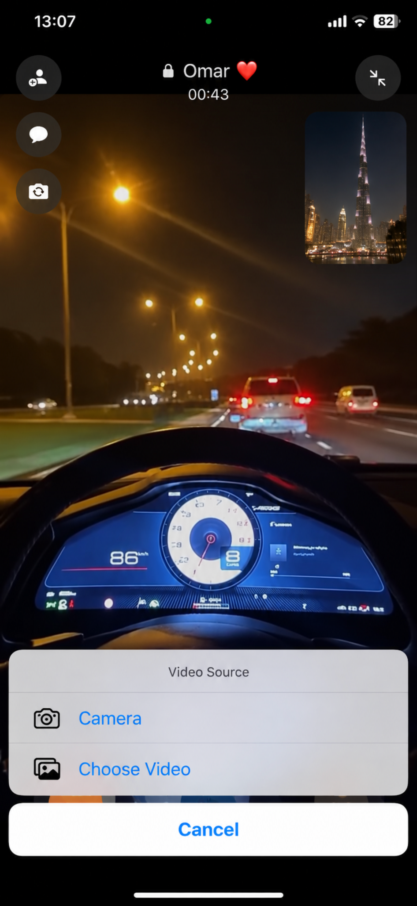
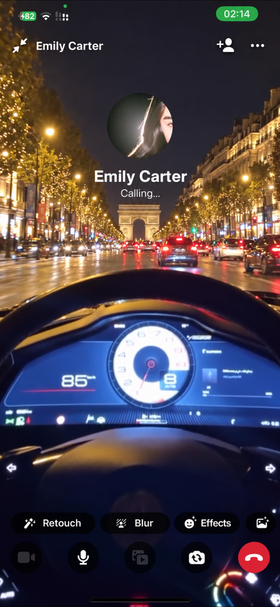
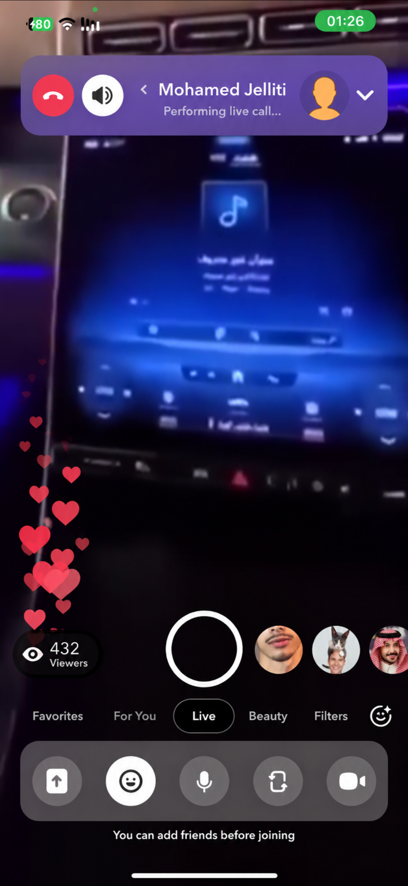

camPro
Live Streaming & Video Calls
US$9.99 per app · one-time purchase
Buy App License / شراء ترخيص التطبيقEnglish Description
camPro combines seven live-streaming and video-call camera tools in one interface. Choose a video saved in Photos and use it as an alternative camera source within compatible applications.
Import a video, select the application you want, and activate that app using its own license. You can purchase one application at a time.
Supported applications
- Messenger
- TikTok
- Snapchat
- YouTube
Features
- Video import from Photos
- Selectable alternative camera feed in supported live streams and video calls
- Seven independent app modules managed in one interface
- Separate activation for each application
Price: US$9.99 per application, one-time lifetime purchase. No monthly subscription.
Requires a compatible rootless jailbreak with ellekit. App and iOS compatibility depends on the installed versions; this listing does not constitute device testing.
الوصف العربي
camPro أداة تجمع سبعة تطبيقات للبث المباشر ومكالمات الفيديو في واجهة واحدة، وتسمح باختيار فيديو محفوظ من ألبوم الصور واستخدامه بدل الكاميرا في التطبيقات المتوافقة.
يمكنك استيراد الفيديو، واختيار التطبيق الذي تريد استخدامه، وتفعيله بترخيص مستقل دون الحاجة إلى شراء تراخيص التطبيقات الأخرى.
التطبيقات المدعومة
- واتساب – WhatsApp
- ماسنجر – Messenger
- تيك توك – TikTok
- فيسبوك – Facebook
- إنستغرام – Instagram
- سناب شات – Snapchat
- يوتيوب – YouTube
المميزات
- استيراد الفيديو من ألبوم الصور
- استخدام الفيديو مصدرًا بديلًا للكاميرا في البث المباشر ومكالمات الفيديو المدعومة
- إدارة سبعة تطبيقات من واجهة واحدة
- ترخيص وتفعيل مستقل لكل تطبيق
السعر: 9.99 دولار لكل تطبيق، دفعة واحدة مدى الحياة، دون اشتراك شهري.
تتطلب الأداة جيلبريك Rootless متوافقًا مع ellekit، ويختلف التوافق حسب إصدار iOS وإصدار التطبيق.
Screenshots / لقطات الشاشة



📞 الدعم الفني | Technical Support
للمساعدة في التثبيت والتفعيل تواصل مع المطور عبر تلجرام أو البريد الإلكتروني.
For installation or activation assistance, contact the developer.
Developer: Mohamedjj
Telegram: @mohmo10s
Email: fahad363636@gmail.com